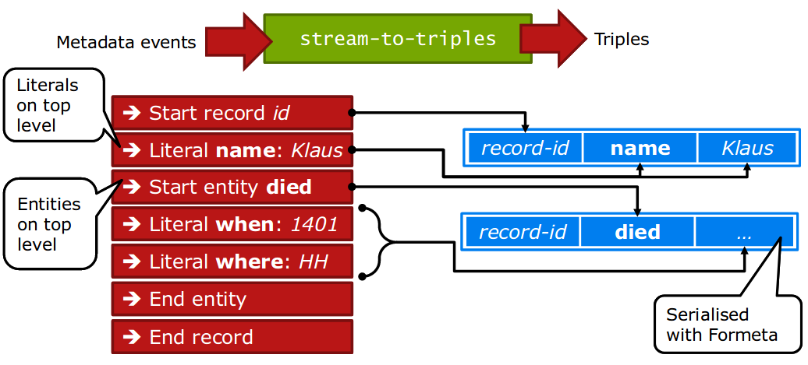

Metadatenworkflows mit Metafacture erstellen und verwalten
Fabian Steeg &
Tobias Bülte
Offene Infrastruktur,
Hochschulbibliothekszentrum NRW (hbz)
WWW,
Mai 2022
https://slides.lobid.org/2022-05-metafacture-workshop/
(PDF)

Agenda
- Einführung & Kontext
- Workflows
- Transformieren
- Analysieren
- Zusammenführen
- Ausblick, Fragen & Diskussion
1. Kontext: Datentransformation
Anwendungsszenarien
Datenanalyse, z.B. Feldabdeckung im Katalog
Datenaufbereitung, z.B. zur Visualisierung mit Kibana
Datenanreicherung, z.B. Ergänzung von Daten aus Wikidata
Datenaggregation aus unterschiedlichen Quellen, z.B. OERSI
Systemmigration, z.B. nach Alma oder Folio
Annahmen
Transformationen von Metadaten gehören zum täglichen Geschäft wissenschaftlicher Bibliotheken.
Es gibt viele unterschiedliche Methoden, die meist Programmierkenntnisse voraussetzen.
Datentransformationen werden meist im Zusammenspiel von Fachabteilungen & IT umgesetzt, verbunden mit größerem Kommunikationsaufwand.
Bereits existierende, von anderen entwickelte Transformationsprozesse können nur bedingt entdeckt und nachgenutzt werden.
Das heißt:
Es gibt großes Potential, eine immer wiederkehrende Arbeit zugänglicher, kollaborativer und effizienter zu gestalten.
Übergeordnete Ziele
Ermächtigung der Fachebene zur Konfiguration von Datentransformationen
Förderung von Praktiken zum Teilen und Auffinden von Transformationsprozessen
2. Was ist Metafacture?
Was ist Metafacture?
Ein vielseitiges Werkzeug zur Verarbeitung von semi-strukturierten Daten mit dem Fokus auf Bibliotheksdaten
nutzbar als Kommandozeilentool, als Java/JVM library,
für Batch-Verarbeitung oder on-the-fly
offenes Framework: Weiterentwicklung, Wiederverwendung und Austausch (von einzelnen Modulen und ganzen Workflows)
Metafacture-Historie
2011: Start der Entwicklung durch DNB im Rahmen von Culturegraph; damals schon Austausch mit dem hbz
2013: Umzug auf GitHub, Open-Source-Projekt geworden
2019: Mit der Zeit immer weniger DNB-Ressourcen für Metafacture, hbz wird Maintainer
Wie Metafacture funktioniert
Grundidee: Daten fließen durch mehrere Module:
→ read → decode
→ transform → encode → write →
Jedes Modul erwartet Input eines bestimmten Typs und erzeugt Output eines bestimmten Typs
Verschiedene Formate werden unterstützt (z.B. PICA, MARC), erweiterbares Framework für eigene Formate
Durch Kombination einzelner Module, durch die unsere Daten fließen, bauen wir den Workflow
Ein Workflow

Aus: Christoph Böhme, http://swib.org/swib13/slides/boehme_swib13_131.pdf
Workflows konfigurieren und ausführen
Workflows können in Flux (einer speziellen Konfigurationssprache) oder mit Java (typsicher über Java Generics) bearbeitet werden
Flux-Workflows können in einem Texteditor editiert und auf der Kommandozeile ausgeführt werden, Java-Workflows funktionieren wie andere Java-Komponenten
Der Workshop führt in die Nutzung der Flux-Workflows ein
Metafacture Playground
Webbasierte Oberfläche zum Ausprobieren und Austauschen von Workflows
Ziel: Einstiegshürde für Metafacture senken, neben Morph-Komplexität unserer Erfahrung nach ein weiteres zentrales Problem bei der Metafacture-Nutzung
Für Entwicklung, Dokumentation, Tutorials, Workshops

Workflow-Beispiel
Ausgabe von PICA-Daten als JSON
$ gedit sample1.flux &
"bib-data.pica.gz"
| open-file | as-lines | decode-pica | encode-json | print ;
$ flux.sh sample1.flux
https://github.com/hbz/metafacture-flux-examples/tree/master/sample1

Übung: Formatierung & Optionen
Playground-Beispiel entsprechend sample1 anpassen:
$ gedit sample1.flux &
"bib-data.pica.gz"
| open-file
| as-lines
| decode-pica
| encode-json(prettyPrinting = "true")
| print;
$ flux.sh sample1.flux
https://github.com/hbz/metafacture-flux-examples/tree/master/sample1

Dokumentation
Was für Module gibt es? Was machen die?
$ flux.sh # oder flux.bat auf Windows
https://github.com/metafacture/metafacture-documentation/blob/master/flux-commands.md
z.B. statt JSON als "Formeta" ausgeben, formatiert
encode-formeta(style="multiline")
'482147350' {
'001@' {
'a': '5',
'0': '1-2'
},
'001A' {
'0': '1100:15-10-94'
},
'001B' {
'0': '9999:12-06-06',
't': '16:10:17.000'
},
'001D' {
'0': '9999:99-99-99'
},
'001U' {
'0': 'utf8'
},
'001X' {
'0': '0'
},
'002@' {
'0': 'Aag'
},
'003@' {
'0': '482147350'
},
'006U' {
'0': '94,P05'
},
'007E' {
'0': 'U 70.16407'
},
'007I' {
'S': 'o',
'0': '74057548'
},
'011@' {
'a': '1970'
},
'017A' {
'a': 'rh'
},
'021A' {
'a': 'Die @Berufsfreiheit der Arbeitnehmer und ihre Ausgestaltung in völkerrechtlichen Verträgen',
'd': 'Eine Grundrechtsbetrachtg'
},
'028A' {
'9': '106884905',
'7': 'Tn3',
'A': 'gnd',
'0': '106884905',
'a': 'Projahn',
'd': 'Horst D.'
},
'033A' {
'p': 'Würzburg'
},
'034D' {
'a': 'XXXVIII, 165 S.'
},
'034I' {
'a': '8'
},
'037C' {
'a': 'Würzburg, Jur. F., Diss. v. 7. Aug. 1970'
}
}
'958090564' {
'001@' {
'0': '1',
'a': '5'
},
'001A' {
'0': '1140:08-12-99'
},
'001B' {
'0': '9999:05-01-08',
't': '22:57:29.000'
},
'001D' {
'0': '9999:99-99-99'
},
'001U' {
'0': 'utf8'
},
'001X' {
'0': '0'
},
'002@' {
'0': 'Aa'
},
'003@' {
'0': '958090564'
},
'004A' {
'f': 'kart. : DM 9.70, EUR 4.94, sfr 8.00, S 68.00'
},
'006U' {
'0': '00,B05,0285'
},
'007I' {
'S': 'o',
'0': '76088278'
},
'011@' {
'a': '1999'
},
'017A' {
'a': 'rb',
'a': 'si'
},
'019@' {
'a': 'XA-AT'
},
'021A' {
'a': 'Zukunft Bildung',
'h': 'Politische Akademie. [Hrsg. von Günther R. Burkert-Dottolo und Bernhard Moser]'
},
'028C' {
'9': '130681849',
'7': 'Tp1',
'V': 'piz',
'A': 'gnd',
'0': '130681849',
'E': '1952',
'a': 'Burkert',
'd': 'Günther R.',
'B': 'Hrsg.'
},
'033A' {
'p': 'Wien',
'n': 'Polit. Akad.'
},
'034D' {
'a': '79 S.'
},
'034I' {
'a': '24 cm'
},
'036F' {
'x': '299 12',
'9': '551720077',
'g': 'Adn',
'7': 'Tb1',
'A': 'gnd',
'0': '1040469-7',
'a': 'Politische Akademie',
'g': 'Wien',
'Y': 'PA-Information',
'h': 'Politische Akademie, WB',
'p': 'Wien',
'J': 'Politische Akad., WB',
'l': '99,2'
},
'036F/01' {
'x': '12',
'9': '025841467',
'g': 'Advz',
'i': '2142105-5',
'Y': 'Aktuelle Fragen der Politik',
'h': 'Politische Akademie',
'p': 'Wien',
'J': 'Politische Akad. der ÖVP',
'l': 'Bd. 2'
},
'045E' {
'a': '22',
'd': '18',
'm': '370'
},
'047A' {
'S': 'FE',
'a': 'ta'
}
}
https://github.com/hbz/metafacture-flux-examples/tree/master/sample1
Transformationsmodul
Manipulation von Feldnamen und -werten; filtern, kombinieren, normalisieren etc.
Feldwerte aus Lookup-Tabellen in externen Dateien (z.B. Freitextfelder -> kontrollierte Vokabulare)
Morph: XML-basiert, Feld- / Metadaten-Event-Ebene
Fix: eigene, Catmandu-Fix-artige Sprache, Record-basiert
Metafacture Fix: Ziele
Erleichterung der Transformationskonfiguration
Anknüpfung an existierende Konfigurationssprache aus Catmandu (mittelfristiges Ziel: Standardisierung, s. https://github.com/elag/FIG)
Vergrößerung der Zielgruppe um Bibliothekar:innen und andere Metadatenfachleute (bei uns z.B. in OERSI, erster Anwendungsfall und Entwicklungsbegleitung zu Fix)


Übung
z.B. Titel, Verlag, Erscheinungsort und -jahr aus den PICA-Feldern 021A.a, 033A.n, 033A.p, 011@.n verwenden
Verlag und Erscheinungsort sollen in einem neuen Feld kombiniert werden
Als Feldnamen wollen wir sprechende, nicht-numerische Bezeichnungen haben
move_field, paste, retain
1{a: Faust, b {n: Goethe, v: JW}, c: Weimar}
2{a: Räuber, b {n: Schiller, v: F}, c: Weimar}
move_field(a, title)
paste(author, b.v, b.n, '~aus', c)
retain(title, author)
{"title":"Faust", "author":"JW Goethe aus Weimar"}
{"title":"Räuber", "author":"F Schiller aus Weimar"}

Übung
Feld 002@.0 → dcterms:format
In 002@.0, Position 1, A: print, B: audiovisual, O: online
z.B. mit copy_field, substring, lookup, retain, s. Dokumentation
Export & Import
Workflow kann zur lokalen Ausführung aus dem Playground exportiert werden (Dateien-Download)
Flux-, Fix- und Daten-Datei können lokal bearbeitet und per Kommandozeile ausgeführt werden
Dateien können dann auch wieder in den Playground importiert werden (Dateien-Upload)

Rückschau
Workflows mit Flux
Transformationen mit Fix
Playground, Export, Import
Daten analysieren
stream-to-triples
Source: Christoph Böhme, http://swib.org/swib13/slides/boehme_swib13_131.pdf
count-triples

Source: Christoph Böhme, http://swib.org/swib13/slides/boehme_swib13_131.pdf
template

Source: Christoph Böhme, http://swib.org/swib13/slides/boehme_swib13_131.pdf
Beispiel: Feldwerte zählen
Anzahl unterschiedlicher Werte im Edition-Feld (032@.a)
$ gedit count.fix &
move_field('032@.a', 'Edition')
retain('Edition')
$ gedit count.flux &
"bib-data.pica.gz"
|open-file
|as-lines
|decode-pica
|fix("count.fix")
|stream-to-triples
|count-triples(countBy = "object")
|template("${o} | ${s}")
|write("stdout");
https://github.com/hbz/metafacture-flux-examples/tree/master/sample4

Daten per URL lesen
Statt aus Datei lesen (oder PG_DATA) auch per URL möglich
Statt `"some.file" | open-file ...` → `"http://..." | open-http`
Aufgabe: voriges Beispiel, aber von URL lesen, was fällt auf?
https://github.com/hbz/metafacture-flux-examples/blob/master/sample4/bib-data.pica?raw=true
Beispiel: Feldwerte zählen
1 | (1. Aufl.)
1 | (16.-20. Taus.)
2 | (2. Aufl.)
1 | (2. Aufl.) - 1:10 000
1 | (2. ed.)
1 | (3. rev. ed.)
1 | (Ausg. 1971/72)
1 | (Ausg. für die Volkswirtschaft), 1. Ausg., Stand der Unterlagen: 1977
1 | (Ausg. für die Volkswirtschaft), 1. Ausg., Stand der Unterlagen: 1986
1 | (Ausg. für die Volkswirtschaft), 1. Ausg., Stand der Unterlagen: 1987
1 | (Ausg. für die Volkswirtschaft), 3. Ausg., Stand der Unterlagen: 1980
2 | (Ausg. für die Volkswirtschaft), 3. Ausg., Stand der Unterlagen: 1981
3 | (Ausg. für die Volkswirtschaft), 3. Ausg., Stand der Unterlagen: 1982
1 | (Rechtsstand: 1. Nov. 1963)
1 | (Stand: 1. Sept. 1965)
1 | (Stand: Januar 1990)
1 | (Versión rev.), 4. ed.
1 | 05/1974
2 | 1. - 10. Tsd.
1 | 1. - 3. Tsd.
1 | 1. - 5. Tsd.
1 | 1. - 9. Tsd.
494 | 1. Aufl.
1 | 1. Aufl. d. Neubearb.
1 | 1. Aufl. d. Neuübers.
3 | 1. Aufl. dieser Ausg.
1 | 1. Aufl., 1. - 50. Tsd.
14 | 1. Aufl., 1. Dr.
...
22 | Dt. Erstausg.
4 | Dt. Erstausg., 1. Aufl.
...
26 | Orig.-Ausg.
8 | Orig.-Ausg., 1. Aufl.
...
https://github.com/hbz/metafacture-flux-examples/tree/master/sample4
Übung: Muster zählen
Ausgabe der Anzahl von Geburtsjahren (060R.a) der Muster 'yyyy' oder 'dd.mm.yyyy'
Ausgabe der Anzahl der Werte in 060R.a, die beiden Mustern nicht entsprechen (Fehler)

Übung: was / warum invalid?
1. nur 'invalid birth' retainen
2. nicht zählen, Tripel nur ausgeben
Übung: volles Datenset per URL
Aufgabe: voriges Beispiel, aber von URL lesen:
https://github.com/hbz/metafacture-flux-examples/blob/master/sample5/authority-data.pica?raw=true
Übung: Muster zählen, volle Daten, und Sterbejahre (060R.b)
birth (full): 873
birth (year): 4874
death (full): 460
death (year): 1587
invalid birth: 9
invalid death: 5
https://github.com/hbz/metafacture-flux-examples/tree/master/sample5
Daten zusammenführen / anreichern
Wurmloch

Aus: Christoph Böhme, http://swib.org/swib13/slides/boehme_swib13_131.pdf
Unterschiedliche IDs
Typischerweise haben Entitäten in unterschiedlichen Datenquellen unterschiedliche IDs
z.B. GND mit GND-ID, Wikipedia mit eigener ID, aber z.B. GND-ID in Feld 'gnd'
d.h. zum Zusammenführen brauchen wir einen Weg, die IDs aus einer der Datenquellen zu setzen
redirect="true"

Source: Christoph Böhme, http://swib.org/swib13/slides/boehme_swib13_131.pdf
Übung: Zusammenführen / Anreichern
Wir kombinieren Daten in wiki-persons.foma (enthält GND-IDs im Feld 'gnd') und GND-PICA-Daten (in PG_DATA)
https://github.com/hbz/metafacture-flux-examples/tree/master/sample6
Daten zusammenführen
'118514768' {
'001A' {
'0': '1250:01-07-88'
},
'001B' {
'0': '1140:26-07-13',
't': '08:58:08.000'
},
'001D' {
'0': '1220:16-06-08'
},
'001U' {
'0': 'utf8'
},
'001X' {
'0': '0'
},
'002@' {
'0': 'Tp1'
},
'003@' {
'0': '118514768'
},
'003U' {
'a': 'http://d-nb.info/gnd/118514768',
'z': 'http://d-nb.info/gnd/1022091077'
},
...
'lccn': 'n/79/18801',
'ndl': '00434255',
'viaf': '2467372',
'imdb': '0106517',
'category': 'Bertolt Brecht',
'category': 'Autor',
'category': 'Literatur (20. Jahrhundert)',
'category': 'Literatur (Deutsch)',
'category': 'Literatur (Berlin)',
'category': 'Lyrik',
'category': 'Drama',
'category': 'Novelle',
'category': 'Essay',
'category': 'Politische Literatur',
'category': 'Theaterregisseur',
'category': 'Liedtexter',
'category': 'Drehbuchautor',
'category': 'Filmregisseur',
'category': 'Hanns Eisler',
'category': 'Helene Weigel',
'category': 'NS-Opfer',
'category': 'Emigrant aus dem Deutschen Reich zur Zeit des Nationalsozialismus',
'category': 'Träger des Nationalpreises der DDR I. Klasse für Kunst und Literatur',
'category': 'Mitglied der Akademie der Künste (DDR)',
'category': 'Deutscher',
'category': 'Österreicher',
'category': 'DDR-Bürger',
'category': 'Künstler (DDR)',
'category': 'Künstler (Augsburg)',
'category': 'Schriftsteller (Berlin)',
'category': 'Geboren 1898',
'category': 'Gestorben 1956',
'category': 'Mann',
'category': 'Deutscher Widerstand gegen den Nationalsozialismus in den USA'
}
'11852884X' {
'001A' {
'0': '1250:01-07-88'
},
'001B' {
'0': '1510:27-05-08',
't': '09:39:52.000'
},
'001D' {
'0': '9999:06-04-08'
},
'001U' {
'0': 'utf8'
},
'001X' {
'0': '0'
},
'002@' {
'0': 'Tp1'
},
'003@' {
'0': '11852884X'
},
'003U' {
'a': 'http://d-nb.info/gnd/11852884X'
},
...
'lccn': 'n/79/21285',
'ndl': '00438594',
'viaf': '108299403',
'imdb': '0248767',
'category': 'Umberto Eco',
'category': 'Philosoph (20. Jahrhundert)',
'category': 'Philosoph (21. Jahrhundert)',
'category': 'Autor',
'category': 'Literatur (20. Jahrhundert)',
'category': 'Literatur (21. Jahrhundert)',
'category': 'Literatur (Italienisch)',
'category': 'Semiotiker',
'category': 'Roman, Epik',
'category': 'Erzählung',
'category': 'Essay',
'category': 'Medienwissenschaftler',
'category': 'Kulturwissenschaftler',
'category': 'Herausgeber',
'category': 'Hochschullehrer (Bologna)',
'category': 'Pataphysik',
'category': 'Träger des Großen Bundesverdienstkreuzes mit Stern',
'category': 'Träger des Verdienstordens der Italienischen Republik (Großkreuz)',
'category': 'Träger des Ordre des Arts et des Lettres (Komtur)',
'category': 'Träger des Pour le Mérite (Friedensklasse)',
'category': 'Träger des Österreichischen Staatspreises für Europäische Literatur',
'category': 'Mitglied der Ehrenlegion (Offizier)',
'category': 'Ehrendoktor einer Universität',
'category': 'Ehrendoktor der Freien Universität Berlin',
'category': 'Ehrendoktor der Hebräischen Universität Jerusalem',
'category': 'Ehrendoktor der Universität Tartu',
'category': 'Ehrendoktor der Universität Tel Aviv',
'category': 'Italiener',
'category': 'Geboren 1932',
'category': 'Mann'
}
https://github.com/hbz/metafacture-flux-examples/tree/master/sample6
Aktueller Stand Fix
Beispiele: produktiv in OERSI (diverse Web-Quellen → JSON), im Aufbau für hbz-Verbundkatalog (MARC → JSON) und Rheinland-Pfälzische Bibliographie (Allegro → JSON)
Tests: unit (Simulation von Input-Output-Events und Fix auf Code-Ebene; aktuell pass 422 / 447), integration (Input, Flux, Fix, Output als Dateien wie bei Real-World-Setup; aktuell pass 170 / 228, d.h. aktuell 75% "conformance")
d.h. vieles geht schon, aber es gibt auch noch einiges zu tun
Ausblick
Community vergrößern
Metafacture hbz-intern als zentrales Tool etablieren
Weitere Nutzer:innen und Mitentwickler:innen innerhalb und außerhalb des hbz-Verbunds gewinnen
Standards nutzen und aufbauen
SKOS Lookups (zum Andocken an SkoHub Vocabs)
Entity Reconciliation mit OpenRefine-kompatiblen Diensten
Fix-Standardisierung, s. https://github.com/elag/FIG
ETL Hub
ETL: Extract, Transform, Load
mehr Kollaboration, Teilen & Auffinden von Workflows ermöglichen (nicht nur für Metafacture)
Entwicklung von Best Practices zur Paketierung und Beschreibung von ETL-Konfigurationen
Aufbau eines ETL Hubs zum Entdecken existierender ETL-Prozesse für die einfache Nachnutzung und Anpassung
Fragen und Diskussion